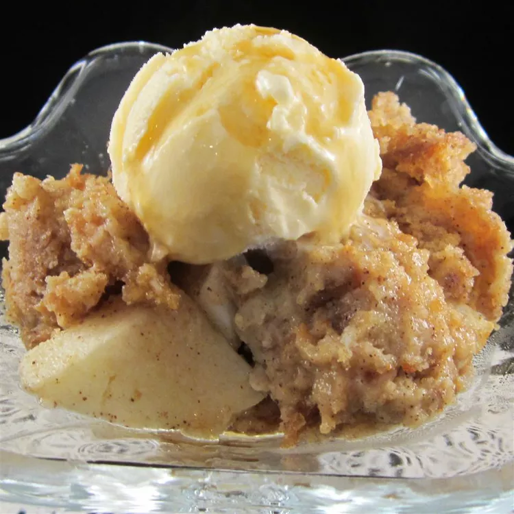

Cider Donut Bread Pudding

Description
A delicious use for day-old apple cider donuts, this easy bread pudding is loaded with fall flavor. Serve with a glass of apple cider.
Ingredients
- cooking spray
- 6 day-old cider donuts, broken into bite-sized pieces
- 1 large apple - peeled, cored, and chopped
- 1 ½ cups half-and-half
- ¼ cup white sugar
- 2 large eggs, lightly beaten
- 1 teaspoon vanilla extract
- ¾ teaspoon ground cinnamon
- 2 tablespoons maple syrup, or more to taste (Optional)
Steps
- Preheat the oven to 350 degrees F (175 degrees C). Grease an 8-inch square baking dish with cooking spray.
- Mix donut pieces and apple together in the prepared baking dish.
- Whisk half-and-half, sugar, eggs, vanilla, and cinnamon together in a bowl. Pour mixture into the baking dish and let sit, stirring occasionally, until liquid is absorbed, about 15 minutes.
- Bake in the preheated oven until golden, about 30 minutes.
- Remove from the oven and let cool for 15 minutes. Drizzle with maple syrup.